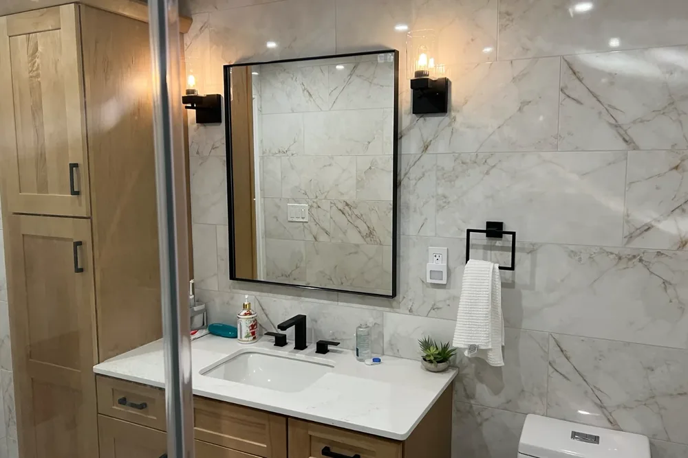
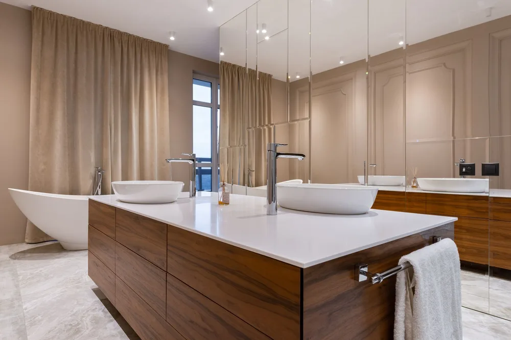
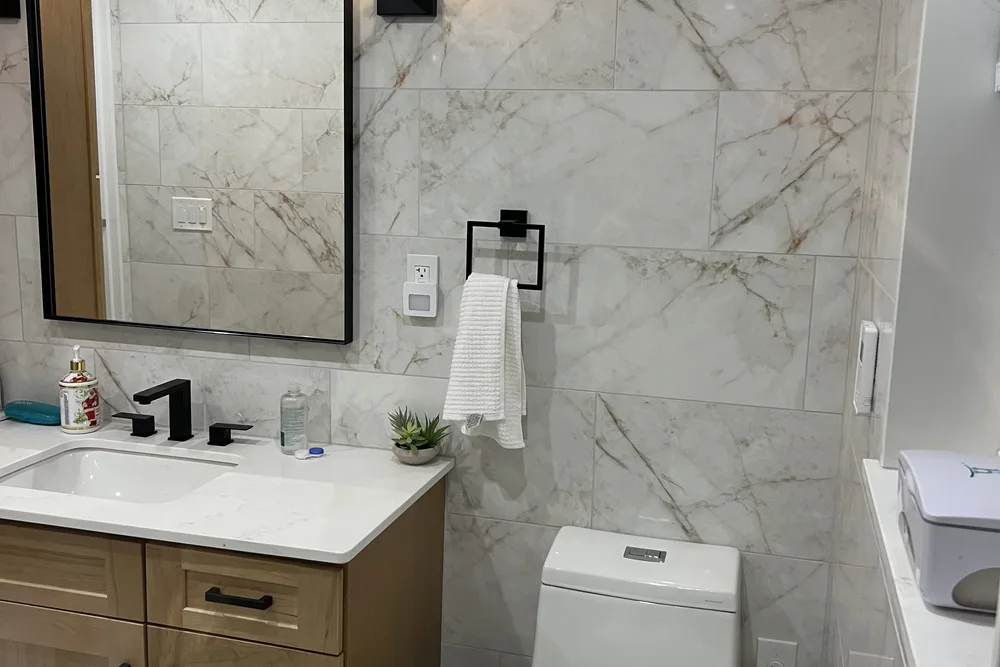

Hamilton bathroom remodeling contractors
Bathroom Remodeling Hamilton MA, planned and built by DeFaria
Bathroom Remodeling Hamilton MA projects start with a written plan and an owner-led walkthrough. Hamilton bathroom remodeling from DeFaria Construction covers the rough-in, waterproofing, tile and fixtures, planned before demolition so the finished bathroom holds up to daily use and Massachusetts winters.
Our work
A real DeFaria bathroom transformation
Watch a bathroom we remodeled, from the first step to the final detail.
Get a Free Estimate
Local search focus
Hamilton bathroom remodeling is about what happens behind the tile.
Across South Hamilton, The Hamlet, Asbury Grove and Chebacco Woods, Hamilton mixes historic Colonial houses and estate and equestrian homes with 20th-century suburban residences along winding rural roads. A lasting Hamilton bathroom remodel depends on clean rough-in, proper waterproofing and ventilation before anyone sees a single tile.
This page is built for Hamilton homeowners comparing bathroom remodeling contractors near them. It connects the Hamilton search to project photos, neighborhoods, the full bathroom scope and a direct estimate path.
- Clear estimate conversations before the project starts.
- Direct communication with the homeowner from walkthrough to final walkthrough.
- Local coverage across Hamilton and the wider Essex County area.
The scope
What a full Hamilton bathroom remodel covers

In Hamilton, historic Colonial houses and large estate homes along winding rural roads often add layout and access constraints.
- A clean rough-in and waterproofing base before the first tile goes up.
- Coordinated tile, fixtures, vanity and lighting for a finish that holds.
- Moisture control and finish carpentry that keep the room right over time.
Hamilton permits and inspections run through the Town of Hamilton Building Department, and DeFaria keeps that step organized so scope and timeline stay realistic.
Cost
How much does a bathroom remodel cost in Hamilton?

For a Hamilton bathroom, budget roughly $12,000 to $25,000 for a full standard remodel and $25,000 to $45,000 or more for a large or high-end build. The estimate follows the actual work, never a one-size number.
- The size of the room and any change to the layout.
- The grade of tile, vanity, fixtures and lighting.
- The age of the home and what is hidden in the walls and floor.
- The amount of waterproofing, ventilation and carpentry needed.
Because historic Colonial houses and large estate homes along winding rural roads often add layout and access constraints in Hamilton, hidden conditions behind the walls are priced honestly at the walkthrough, not discovered mid-project.
DeFaria gives a fixed, itemized Hamilton estimate at the walkthrough, so the price matches the actual scope instead of a guess.
Process
How a Hamilton bathroom remodel runs, step by step

A Hamilton bathroom remodel moves through set stages, so you can see what comes next.
- Walkthrough and a clear, itemized estimate.
- Design and material selection: tile, vanity, fixtures and lighting.
- Protection of the home and demolition of the existing bathroom.
- Plumbing and electrical rough-in for the new layout.
- Waterproofing and moisture control behind the tile.
- Tile, vanity, fixtures and finish carpentry.
- Paint, final details and a walkthrough before you sign off.
DeFaria coordinates the Hamilton permit with the Town of Hamilton Building Department before the rough-in, and keeps you updated at each step.
A typical Hamilton bathroom remodel runs about 2 to 4 weeks after materials arrive, depending on scope.
Materials
Materials and finishes that hold up in Hamilton bathrooms

In Essex County, bathrooms face humidity, hard water and cold winters, so durability drives the finish, not just looks.
- A tile assembly built on real waterproofing, not just cement board.
- Slip-aware floor tile and grout chosen for cleaning and wear.
- Ventilation and moisture control to protect the finish long term.
- Water-tolerant cabinetry, trim and coatings throughout.
Around South Hamilton and The Hamlet, historic Colonial houses and large estate homes along winding rural roads often add layout and access constraints, so materials and waterproofing are matched to the home instead of picked from a generic list.
When to remodel
Signs it is time to remodel your Hamilton bathroom

A few clear signs a Hamilton bathroom is ready for a remodel:
- Recurring leaks, soft floors or water stains.
- Mold, mildew or poor ventilation.
- Dated or failing fixtures, tile and vanities.
- A layout that wastes space or does not fit the household.
- Planning to sell and wanting a stronger return.
These come up often in Hamilton homes near South Hamilton and The Hamlet.
Layout and rough-in
Planning the layout and rough-in for your Hamilton bathroom
The rough-in is where a Hamilton bathroom project is won or lost. We start by measuring the existing space, then decide whether the current layout can stay or whether fixtures should move for better clearances and flow.
When plumbing has to be rerouted, we open the floor and walls, reset the drain slope, and verify venting meets code. Because historic Colonial houses and large estate homes along winding rural roads often add layout and access constraints, we inspect the framing and subfloor for rot or sagging while everything is exposed in your Essex County house.
In Hamilton, homeowners near South Hamilton, The Hamlet and Asbury Grove get a bathroom remodeling scoped for the neighborhood and the Essex County housing it sits in, permitted through Town of Hamilton Building Department.
Local context shapes the work: Hamilton mixes historic Colonial houses and estate and equestrian homes with 20th-century suburban residences along winding rural roads. We plan the Hamilton bathroom remodeling around exactly that.
In Hamilton we cover South Hamilton, The Hamlet, Asbury Grove and Chebacco Woods, so the bathroom remodeling fits the block it is on.
- Map toilet, vanity, tub and shower positions first
- Price any fixture relocation clearly at the walkthrough
- Upgrade undersized or aging Essex County waste lines
- Verify drain slope and venting meet current code
Waterproofing and ventilation
Waterproofing and ventilation built for Hamilton winters
Skipping waterproofing is the most expensive mistake a Hamilton homeowner can make, and it only shows up after the tile looks finished. We use bonded membranes, backer board and properly sloped pans so water drains instead of soaking into the structure.
Because winters here keep bathrooms closed and steamy, we size and duct the exhaust fan to actually clear the humidity, venting it straight outside your Essex County home rather than dumping it into an attic where it causes hidden damage.
For Hamilton homes from South Hamilton to Asbury Grove, we tie the bathroom remodeling to the realities of Essex County housing and keep Town of Hamilton Building Department in the loop on approvals.
Every Hamilton bathroom remodeling starts from the local reality. Hamilton mixes historic Colonial houses and estate and equestrian homes with 20th-century suburban residences along winding rural roads.
- Bonded membranes behind tile and under pans
- Shower floor sloped to drain fully
- Exhaust fan ducted outside, never to the attic
- Sealed seams to stop hidden moisture damage
Tile, vanity, fixtures
Choosing tile, vanity and fixtures in Hamilton
In Essex County we guide clients through tile, vanity and fixture selection with durability in mind, not just the showroom photo. Porcelain tile shrugs off moisture, quartz counters resist stains, and quality valves keep working long after trendy finishes fade.
Budget drives a lot of this. A standard full Hamilton remodel typically lands between $12,000 and $25,000, and a large or high-end bathroom is $25,000 to $45,000 or more, so we help you spend on the pieces you touch and see every day.
From South Hamilton to The Hamlet and Asbury Grove, every Hamilton bathroom remodeling is matched to the local housing stock in Essex County, with Town of Hamilton Building Department handling the permit side.
We match the bathroom remodeling to the local homes. Hamilton mixes historic Colonial houses and estate and equestrian homes with 20th-century suburban residences along winding rural roads.
- Porcelain and stone tile compared on durability
- Quartz versus laminate tops for daily wear
- Quality valves that outlast trendy finishes
- Standard remodel typically $12,000 to $25,000
Showers and accessibility
Walk-in showers, tubs and aging-in-place in Hamilton

A walk-in shower opens up a Hamilton bathroom and removes the daily step-over of a tub, which is why so many homeowners choose one during a remodel. We size the pan, seating and controls around who uses the room most.
Aging-in-place is easy to design for when the walls are already open. We add grab-bar blocking, generous clearances and slip-resistant flooring so your Essex County bathroom stays safe and comfortable as needs change.
For homes near South Hamilton, The Hamlet and Asbury Grove, the Hamilton bathroom remodeling is planned case by case, with Essex County permits handled by Town of Hamilton Building Department.
We match the bathroom remodeling to the local homes. Hamilton mixes historic Colonial houses and estate and equestrian homes with 20th-century suburban residences along winding rural roads.
- Shower pan and seating sized to your household
- Non-slip surfaces on floors and thresholds
- Reinforced walls ready for future grab bars
- Comfortable, safe design for years in Hamilton
Working with us
Working with a local Hamilton bathroom contractor

When you hire DeFaria Construction, you work directly with the owner, not a rotating crew of subs you never meet. We start with a walkthrough in Hamilton, listen to what you want, and give you a fixed, itemized estimate so there are no surprises.
We are licensed and insured, carry an A+ BBB rating, and pull the right permits for the work. Hamilton permits and inspections run through the Town of Hamilton Building Department, and DeFaria keeps that step organized so scope and timeline stay realistic. Once materials are on site, a typical Essex County bathroom takes about 2 to 4 weeks to finish.
For homes near South Hamilton, The Hamlet and Asbury Grove, the Hamilton bathroom remodeling is planned case by case, with Essex County permits handled by Town of Hamilton Building Department.
Here is the local picture behind the bathroom remodeling: Hamilton mixes historic Colonial houses and estate and equestrian homes with 20th-century suburban residences along winding rural roads.
- Free walkthrough and honest, line-by-line pricing
- One accountable person managing your Hamilton project
- Proper permits and inspections handled for you
- Typical bathroom finished in about 2 to 4 weeks
Project photos
Bathroom Remodeling photos for Hamilton homeowners
The Hamilton bathroom remodeling page pairs local search intent with real project photos, so visitors see the finish level before requesting an estimate.
Areas covered
Bathroom Remodeling across Hamilton neighborhoods
DeFaria Construction supports bathroom remodeling searches across Hamilton and nearby Essex County towns, giving visitors enough local context to decide whether DeFaria is the right fit before they call.
Across South Hamilton, The Hamlet and Chebacco Woods, Hamilton projects are matched to the neighborhood and run through the Town of Hamilton Building Department.
- South Hamilton
- The Hamlet
- Asbury Grove
- Chebacco Woods
Reviews
What Hamilton homeowners say about DeFaria Construction
DeFaria Construction has a 5.0 rating from 15 reviews on Google. See all reviews on Google.
Luiz’s work is fabulous. Luiz renovated two bathrooms and our kitchen. Each step in the process moved along quickly and we finished earlier than expected. The crew was always pleasant to be around. We are very pleased with the quality of everything that Luiz did, and the price was reasonable. We…
Beautiful full bathroom installment!! I love it!!
Luiz and subcontractors do great work. DeFaria Carpentry completed 2 bathroom renovations and we will be starting on a kitchen renovation in the fall. I highly recommend DeFaria Carpentry.
Older homes
What we find when opening walls in older Hamilton homes
Hamilton has many older colonials and farmhouses, and their bathrooms often hide decades of changes. When walls and floors are opened it is common to find soft subfloor around the toilet or tub, old galvanized or mixed supply lines, drains without proper venting, a fan that vents into the attic, or wiring that does not meet current code. These are not reasons to worry, but they must be fixed before new tile goes in.
Older homes also settle over time, so floors and walls are rarely perfectly level or square. Before tile, we level the subfloor and straighten the walls where needed, because large-format tile and frameless glass show every bump. That preparation is invisible once the room is finished, but it is what makes the grout lines straight, the glass door close properly and the floor feel solid underfoot for years.
We point out the likely issues during the walkthrough, include reasonable allowances in the written estimate, and show you photos and a written change order before any extra work. You approve it first, so the final bill does not surprise you.
Wells and septic
Bathroom remodeling on a private well or septic system
If your Hamilton home is on a private well or septic system, the bathroom plan should account for it. Hard or iron-rich water can stain fixtures and build up in valves and shower heads, so we discuss water treatment and choose fixtures that are easy to clean and service. On septic, we plan drains carefully and keep unnecessary load off the system.
Accessibility
A Hamilton bathroom you can use for years
A remodel is the easiest moment to make a bathroom safer for the long term. Solid blocking in the walls allows grab bars later without opening the tile. A low-curb or curbless shower, a handheld shower head on a slide bar, a built-in bench, a comfort-height toilet and slip-resistant tile make the room easier for every age. Planned from the start, these details look like good design.
Comfort
Heated floors, lighting and ventilation for New England winters
A heated floor is one of the upgrades homeowners appreciate most in a Massachusetts winter, and it is simplest to install while the floor is open. Layered lighting at the ceiling, at the mirror and in the shower makes daily routines easier. An exhaust fan sized for the room, ducted outside and on a humidity or timer switch, protects paint, grout and finishes from moisture.
Hiring guide
Questions to ask before hiring a bathroom remodeler in Hamilton
- Are you licensed and insured in Massachusetts, and will you show proof before work starts?
- What exactly is included, and what is an allowance that can change?
- Which waterproofing system will you use behind the shower tile?
- Who pulls the plumbing and electrical permits, and who is on site every day?
- How is hidden damage priced and approved after demolition?
A low number that leaves out waterproofing, subfloor repair or permits usually costs more in the end. With DeFaria, the owner walks the project with you and the scope is in writing before work begins.
Materials
Choosing tile, vanity and fixtures that last in Hamilton
Porcelain tile holds up well on floors and shower walls and is easy to clean. Larger tiles mean fewer grout lines, and a quality grout, sealed where needed, keeps the shower easier to maintain. For the vanity, a solid-wood or plywood box handles bathroom humidity better than particleboard, and a quartz top resists stains without regular sealing. In a period home, a simple shaker vanity, subway or hex tile and classic fixtures keep the room in character while everything behind the walls is new.
Choosing faucets and shower valves from brands with parts that are easy to find makes future repairs simple. We bring samples to the walkthrough or point you to suppliers so selections are final before demolition.
Small bathrooms
Getting more out of a compact Hamilton bathroom
Many older Hamilton homes have small hall or upstairs bathrooms tucked under rooflines. Moving walls is not always necessary. A floating vanity shows more floor, a recessed medicine cabinet adds storage without sticking into the room, a pocket door frees the swing space of a standard door, and a frameless glass panel lets the whole room be seen at once. Where a sloped ceiling limits headroom, we plan the shower and vanity around the tallest part of the room so the space feels natural to use.
During the project
What to expect while your Hamilton bathroom is remodeled
The work follows a clear order: protection of floors and the path through the house, demolition, framing and subfloor repairs, plumbing and electrical rough-in with inspections, waterproofing and backer board, tile, the vanity and fixtures, glass, paint and a final walkthrough together. Choosing materials before demolition keeps the crew from waiting on orders.
If the home has only one full bathroom, we plan the sequence to keep a working toilet available as long as possible and tell you in advance which days the room will be out of use. The site is cleaned at the end of each day, and you have one point of contact for questions from start to finish.
Internal links
Related DeFaria Construction pages
Compare the full bathroom remodeling scope, the county service area and Hamilton sibling services. Each link points to a live local page with its own search intent.
Experience
Why this Hamilton page is built for real homeowners, not just keywords.
DeFaria Construction serves homeowners and businesses throughout Middlesex County and Essex County as a local, owner-run builder. With hands-on involvement from Luiz DeFaria and A+ BBB credibility, the Hamilton bathroom page is written around real scope, waterproofing and finish coordination, not a city name dropped into a template.
DeFaria Construction is a licensed and insured local contractor with an A+ BBB rating and verified customer reviews, and every Hamilton project is owner-led by Luiz DeFaria from the first walkthrough to the final one.
"our Hamilton bathroom was done right behind the tile, not just made to look good, and it has held up."
Hamilton homeowner

Hear from Hamilton homeowners who hired us: Read DeFaria Construction reviews on Google. BBB Accredited Business with an A+ rating since March 2024, verify on BBB.
The goal is to help someone searching for Hamilton bathroom remodeling contractors understand the scope, the neighborhoods covered and how to start a direct conversation before requesting a free estimate.
Call (617) 893-2221 for a free estimateFAQ
Common questions about bathroom remodeling in Hamilton
What bathroom remodeling work does DeFaria Construction handle in Hamilton?
In Hamilton DeFaria Construction handles plumbing rough-in, waterproofing, tile, vanities, fixtures, ventilation and finish carpentry for a full or partial bathroom remodel.
How much does a bathroom remodel cost in Hamilton?
A Hamilton bathroom remodel usually runs from about $12,000 to $25,000 for a standard full remodel, and $25,000 to $45,000 or more for a large or high-end bathroom. DeFaria gives a fixed, itemized estimate at the walkthrough so the price matches the real scope.
How long does a Hamilton bathroom remodel take?
Most Hamilton bathroom remodels take about 2 to 4 weeks once materials are on site, depending on the scope and whether the layout changes.
Can a small Hamilton bathroom be remodeled without moving walls?
Often yes. Many Hamilton bathrooms gain the most from better fixtures, tile, storage and lighting inside the existing footprint before anyone considers moving plumbing or walls.
Is DeFaria Construction licensed and insured?
Yes. DeFaria Construction is a licensed and insured contractor with an A+ BBB rating and verified reviews, and every Hamilton project is owner-led by Luiz DeFaria.
Does DeFaria handle Hamilton bathroom permits and inspections?
Yes. Hamilton permits and inspections run through the Town of Hamilton Building Department, and DeFaria keeps that step organized so scope and timeline stay realistic.